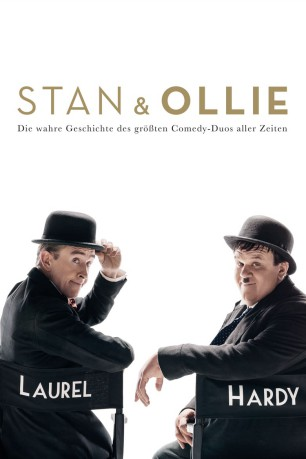

#11808 Stan & Ollie
 
 IMDB-Wertung: 7.2 / 10
IMDB-Wertung: 7.2 / 10  Metascore: 75
Metascore: 75 
Laurel und Hardy befinden sich in der Endphase ihrer Karriere auf einer Tournee durch Großbritannien im Jahr 1953. Ihre Zeit als Comedy-Könige liegt lange hinter ihnen und nicht nur wegen enttäuschender Zuschauerzahlen ihrer neuen Show wissen die beiden alternden Komiker nicht genau, wie es weitergehen soll. Doch sie konnten sich bis jetzt noch immer gegenseitig zum Lachen bringen und schließlich überträgt sich ihr Charme durch ihre Performance auch auf die Zuschauer: Die Show wird doch noch zum Erfolg. Dennoch leidet die kreative Partnerschaft der beiden weiter unter den Gespenstern der Vergangenheit und auch die zunehmend schlechter werdende gesundheitliche Zustand von Hardy erinnert die beiden gnadenlos an das unausweichliche Ende ihrer Karriere.
Jahr: 2018
Dauer: 98 Minuten
FSK: 0
Land: England Studio: Square OneTonspuren: DTS - ,
Untertitel: Deutsch, Englisch,
Auflösung: 1080p (1920x808) Größe: 4833 MB
Genre: Drama, Komödie, Geschichte, Biographie
Regisseur: Jon S. Baird
Drehbuch: Jeff Pope, 'A.J.' Marriot
Soundtrack: Rolfe Kent
Darsteller:
 Steve Coogan als Stan Laurel
Steve Coogan als Stan Laurel John C. Reilly als Oliver Hardy
John C. Reilly als Oliver Hardy Shirley Henderson als Lucille Hardy
Shirley Henderson als Lucille Hardy Nina Arianda als Ida Kitaeva Laurel
Nina Arianda als Ida Kitaeva Laurel- Rufus Jones als Bernard Delfont
 Danny Huston als Hal Roach
Danny Huston als Hal Roach- Joseph Balderrama als James Horne
 John Henshaw als Nobby Cook
John Henshaw als Nobby Cook- Stewart Alexander als Joe Schenck
- Toby Sedgwick als Palladium Manager
- Rebecca Yeo als Concierge Savoy
- Stephanie Hyam als Mr. Miffin's Receptionist
- Sanjeev Kohli als Glasgow Empire Manager
- Richard Cant als Harry Langdon
- Greg Canestrari als Stan's Lawyer
- Roger Ringrose als Doctor at Savoy
- Ella Kenion als Holiday Camp Organiser
- Susy Kane als Cynthia - Mr. Miffin's Head of Production
 Danny Scheinmann als Jewelry Shop Assistant
Danny Scheinmann als Jewelry Shop Assistant Bentley Kalu als Elephant Wrangler
Bentley Kalu als Elephant Wrangler- Josh Connor als Assistant Stage Manager
- Matt Dunkley als Conductor
- Lucy Appleton als Audience Member (uncredited)
- Robert William Carlisle als Man in Dublin Theatre (uncredited)
 Julie Eagleton als Irish Woman - Cork Harbor (uncredited)
Julie Eagleton als Irish Woman - Cork Harbor (uncredited) Daniel Fearn als Cab Driver (uncredited)
Daniel Fearn als Cab Driver (uncredited)- Callum Forman als Stage Hand (uncredited)
 Caroline Garnell als Dublin Audience (uncredited)
Caroline Garnell als Dublin Audience (uncredited)- Eve Harding als Train Passenger 1 (uncredited)
 Michael Haydon als Audience Member (uncredited)
Michael Haydon als Audience Member (uncredited)- Harry Hepple als Wally Brady (uncredited)
- Swaylee Loughnane als Theatre Goer (uncredited)
- Alex McLeish als Hotel Guest (uncredited)
- Andy Mihalache als Arthur I. Royce (uncredited)
- Geoffrey Osborne als Photographer (uncredited)
- Ross Owen als Holidaymaker (uncredited)
- Paul Riddell als Holidaymaker (uncredited)
- Charlie Robinson als Savoy Guest (uncredited)
 Stuart Whelan als Film Crew Member (uncredited)
Stuart Whelan als Film Crew Member (uncredited)- Tapiwa Mugweni als Burgess
- Keith MacPherson als James Finlayson
- Kevin Millington als Clapper Loader
- Kate Okello als Glass Bottle Inn Receptionist
- Ashley Robinson als Gordon Douglas
- Veronica Clifford als Elderly Woman - Glasgow
- Elizabeth Bennett als Lady Warley
- Conrad Asquith als Lord Warley
- Owen Findlay als Robin Hood
- Tom Bates als Scene Hand - Roach Lot
- Ella Baird als Ann MacDonald
Datei: X:\2018(N-Z)\Stan & Ollie (2018, FSK0, 1920x808).mkv seit 20.09.2019
Festplatte: HD 2018(G-Z)-2019(A-Z)
 Es gibt insgesamt 172 Filme in der Gruppe '2018(N-Z)'
Es gibt insgesamt 172 Filme in der Gruppe '2018(N-Z)'